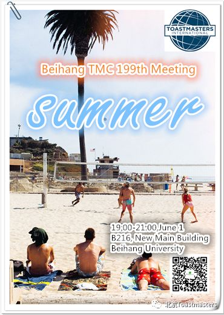
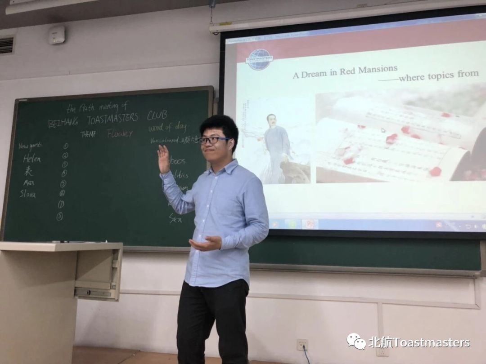
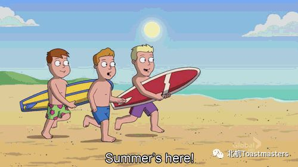
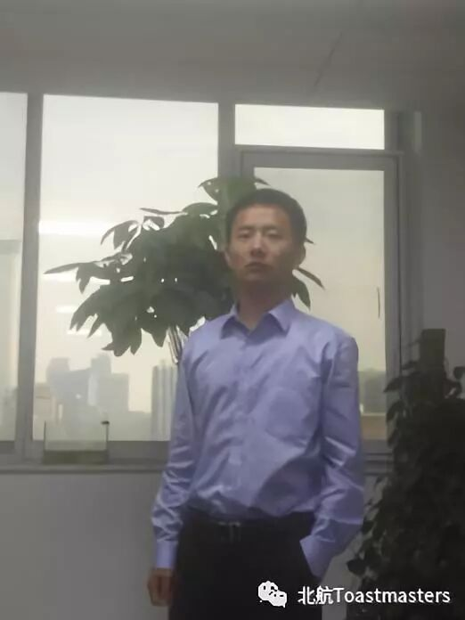
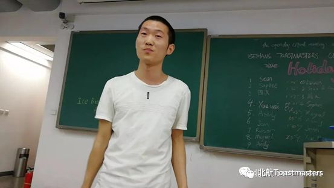

Time: 19:00-21:00, Friday, 1 June
Venue: Room B216, New Main Building, Beihang University
Table topic
Theme: Summer

Toastermaster: Cyril

Table Topics Master: Karen
Summer is a time of so many happy memories,from taking trips to the beach with family and friends to simply enjoying the great outdoors and soaking up the warm sunshine. What does summer remind you?
Please share with us your story and opinions on Friday, 1 June

Hightlight
Prepared speech
Speaker: Allen
Theme: Introduce myself
Level: Pathway ice breaker

Speaker: kaisense
Theme: Enjoy your sleep without phones
Level: Pathway Project 2


BeihangToastmasters Club is a students' union. At the same time, we belong to a non-profit international organization calledToastmasters International.
Toastmasters International (TI) is a non-profit educational organization that operates clubs worldwide for the purpose of helping members improve their communication, public speaking, and leadership skills.You can find us by the following map of Beihang University.

Claire Gong & Arthur Yuan
https://mp.weixin.qq.com/s/XMaSnCyzrXRDV3wPnxj_GA
本页为抢救式本地归档，图文已永久保存。